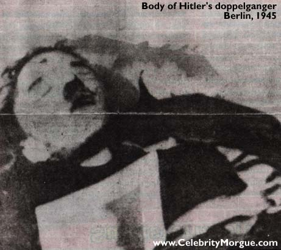
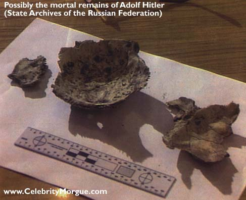

|
www.CelebrityMorgue.com
Hitler suicided in the Fuhrerbunker on 22 April 1945, along with his newly wed wife, Eva Braun. After the suicide, their corpses were taken outside, doused with gasoline, and set afire.
It's Hitler, right? This body was discovered by the Russian contingent in Berlin and assumed to be Adolf Hitler. It is actually Gustav Weler, Hitler's doppelganger (body double), who was executed with a gunshot to the forehead.
Hitler's Remains?The remains above are kept in a cardboard box in the State Archives of the Russian Federation, Moscow, where they were removed to after the Russians occupied Berlin. They are believed to be Hitler's -- charred, age 50's, and dead from a gunshot wound suicide.
|